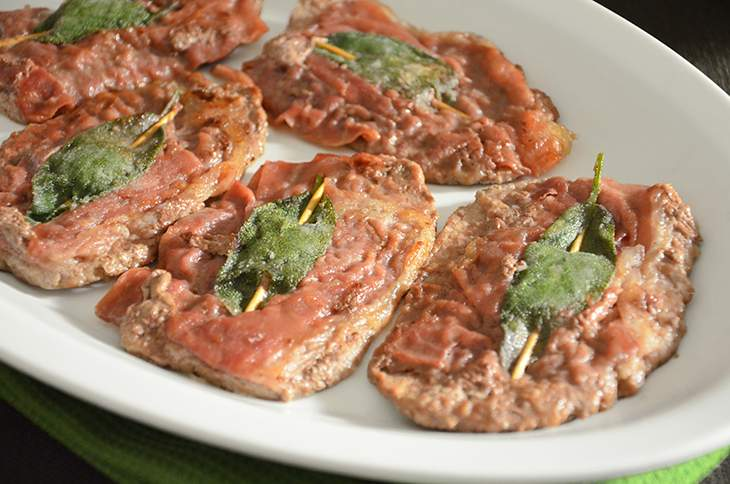

The original recipe, fast and delicious (just like at a restaurant!)
One of the staples in Roman cuisine, saltimbocca is a recipe that never fails to impress.
Easy, fast, fairly cheap and (most importantly) delicious!
Ingredients:
- Veal slices (4) 400g
- Sage 4 leaves
- White wine 100g (prefer a dry wine)
- 00 Flour 50g
- Water 20g
- Parma ham (4 slices) 40g
- Butter 50g
- Black pepper to taste
- Extra virgin olive oil 20g
Instructions:
- Tenderize the meat with a mallet and make it into thin slices (careful not to break it!)
- Place a slice of Parma ham and a sage leaf on top of a veal slice, then skewer all together with a toothpick
- Repeat for every veal slice
- Flour the slices on one side only
- Place 40g of butter and the olive oil into a pan and melt on medium high flame
- Once the butter has melted, place the slices into the pan and slightly raise the flame
- Grind pepper to taste but don't put salt: Parma ham is really salty when cooked!
- When the slices are golden underneath, deglaze with white wine and let the alcohol evaporate
- Once the alcohol has evaporated, cover with a lid and let it sit for 1 minute
- Transfer the slices on a plate and keep them warm
- Time for the sauce: add the last 10g of butter in the pan and water. Let it reduce until it becomes creamy
- Pour the creamy sauce on the slices and you're done! Saltimbocca alla Romana are ready to be served
Storage:
Saltimbocca is a very easy and fast recipe, it's suggested to eat them as soon as you make it
but you could store it in the fridge in an airtight container for up to 2 days.